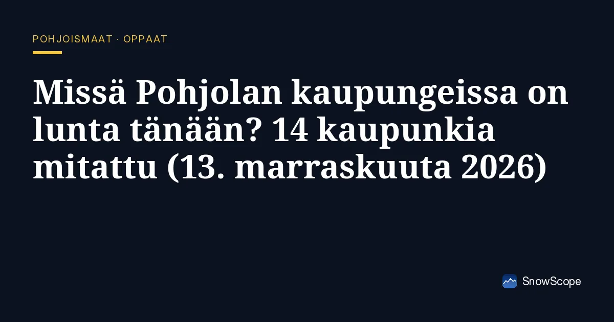

Scandinavia: lumitilanne tänään
Scandinavia: lumitilanne tänään. Perjantaiaamulla pohjoismaidemlumirajajuoksi pohjois-eteläsuuntaisesti pikemminkin kuin itä-länsisuuntaisesti, ja …
Missä Pohjolan kaupungeissa on lunta tänään? 14 kaupunkia mitattu (13. marraskuuta 2026)

Perjantaiaamulla pohjoismaidemlumirajajuoksi pohjois-eteläsuuntaisesti pikemminkin kuin itä-länsisuuntaisesti, ja Pohjanlahden rannikko sekä sisämaan Ruotsi olivat paljon valkeampia kuin Napapiiri. 14 suurta kaupunkia Bergeniista Tromsøhön mittaamalla näkyy talvimaisema siirtymävaiheessa: joitakin paikkoja lumeen hautautuneet, toiset vielä vihreät, ja yksi kauas pohjoisessa sijaitseva yllätys ilman lunta lainkaan.
Valkoinen vyöhyke: Oslon yllä olevat mäet johtavat; Umeå ja Östersund seuraavat
Oslon korkeusyksityiskohta on huomattava. Kaupungin keskusta Blindernissa seisoo vain 4 cm:n lumensyvyydellä, mitattu säähavaintoasemalla. Mutta 8 km pohjoiseen, ylös Tryvannshøgdalle 528 m:n korkeudelle, lumi saavuttaa 37 cm. Tämä on syvimmän mittaus kaikista 14 kaupungista. Kuvio on selvä: korkeutta lisää, lunta lisää.
Rannikon tasangolla Umeå johtaa listaa 20 cm:n lumella Röbäcksdalenissa kaupungin reunalla. Lähes kaikki se saapui kahdessa päivässä; maa oli paljas keskiviikkona. Östersundin mittaukset vaihtelevat sijainnin mukaan: 19 cm Norderönissa ja 24 cm Marbyssa, molemmat järven rannalla sijaitsevat asema, jotka seurasivat Umeåhyn osunutta myrskyä. Kummallakaan kaupungilla ei ollut mitattavaa lunta neljä päivää sitten.